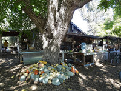
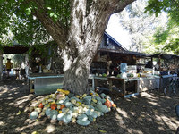

Growing Resourcefully Uniting Bellies
GRUB Education Program
This nonprofit aims to improve the quality of our lives and all life we interact with through locally based, environmental and socially sustainable agriculture, sharing of resources, and experiential learning and services.Donate
The GRUB Education Program is a 501 (c)3. All donations are tax deductible. Your donations are what keep our programs running. You can make a donation to go to our general fund or donate to a specific project.The GRUB Education Nonprofit
This program is an exploration into the health of a local interdependence where stewardship of the land, the environment, and the community is the primary purpose. Our society is an accumulation of the stories of its living community, a fabric woven by threads of commonality. We at GRUB have decided to take responsibility for our experience. We have chosen to change our patterns in a fabric we are a part of creating. We are living a life that finds balance through diversity; we have chosen to switch threads.
We are a federally-recognized 501(c)(3) tax-exempt nonprofit organization (EIN# 31-1776669) and are registered as a charitable organization with the State of California.
Our community garden program is in part contracted by Cultivating Community North Valley. Through this USDA grant we are able to help create new gardens that will support low-income areas. We offer support in finding a garden to work in, technical support with set-up, maintenance questions, and workshops to expand ones garden skills. You can find out more at culitivingcommunitynv.org.
 

Projects
Education
Hundreds of children have learned how to grow food through the GRUB Education program. Learn about the education program.
Community Gardens
GRUB has been establishing and providing support to community gardens throughout the Chico area and beyond. Details on our community gardens.
Resources
The GRUB Education Program offers dishes for events, beekeeping equiment to help with maintaining a hive, bulk buying store of garden supplies, and a Planting Guide for your garden .
Perma-fun-k
An educational non profit organization that offers Permaculture & Regenerative Agriculture hands-on workshops for adults and children. Visit the official Perma-fun-k website .